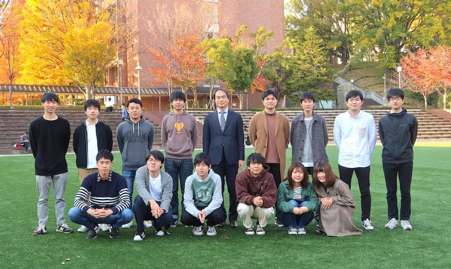
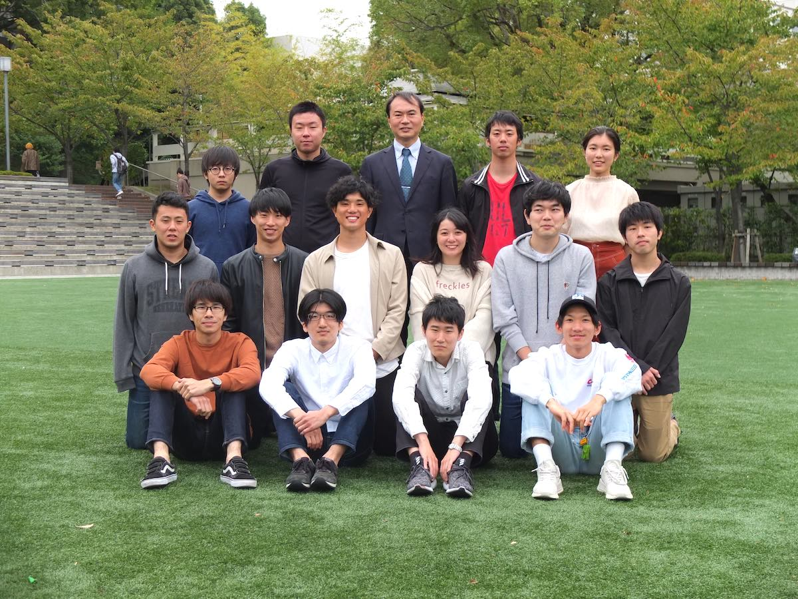
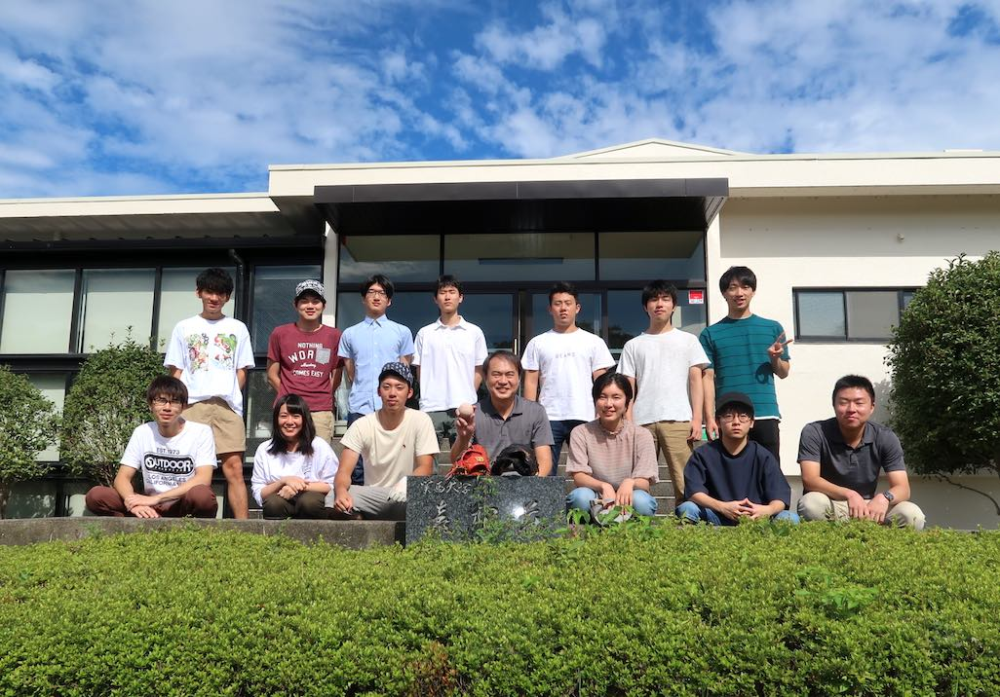
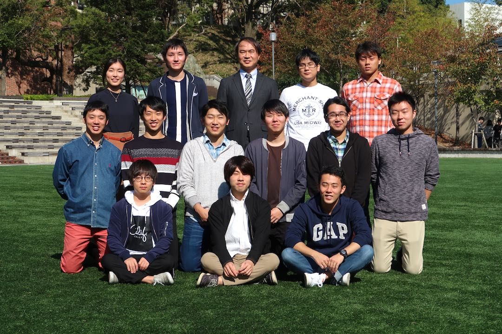

更新履歴
- 2020/12/14 写真 卒業研究中間発表会が開催されました。
- 2020/12/12 論題 大学院生が筆頭著者で投稿した無酸素銅とステンレス鋼のパルス通電接合に関する論文が「Materials Transactions」誌にアクセプトされました。
- 2020/12/1 発表題目 九州工業大学で開催された日本熱処理技術協会秋季講演大会で大学院生5名と教員が発表しました。
- 2020/11/18 写真 卒業アルバム用の集合写真を撮影しました
- 2020/11/18 論題 大学院生が筆頭著者で投稿したチタンスクリーンを用いた低炭素鋼へのプラズマ窒化に関する論文が「日本金属学会誌」にアクセプトされました。
- 2020/11/17 論題 大学院生が筆頭著者で投稿したSi-DLC/DLC多層コーティングに関する論文が「Materials Transactions」誌にアクセプトされました。
- 2020/11/17 論文 ステンレス鋼へのボロナイジングに関する論文が「Defect and Diffusion Forum」誌Vol.405に掲載されました。
- 2020/10/15 日本鉄鋼協会秋季講演大会でステンレス鋼へのDLCコーティングに関する研究を発表した大学院生が学生ポスターセッション奨励賞を受賞しました。
- 20209/25/ 日本金属学会秋期講演大会で高エントロピー合金の焼結に関する研究を発表した大学院生が第35回優秀ポスター賞を受賞しました。
- 2020/9/23 3年次特別演習履修生に対する研究室見学会・説明会を行います。参加希望者は教員までメールで申し込んで下さい。
- 2020/9/17 発表題目 オンラインで開催された日本鉄鋼協会春季講演大会で大学院生6名が発表しました。
- 2020/9/16 発表題目 オンラインで開催された日本金属学会秋期講演大会で大学院生7名が発表しました。
教授紹介
西本明生
文字～



